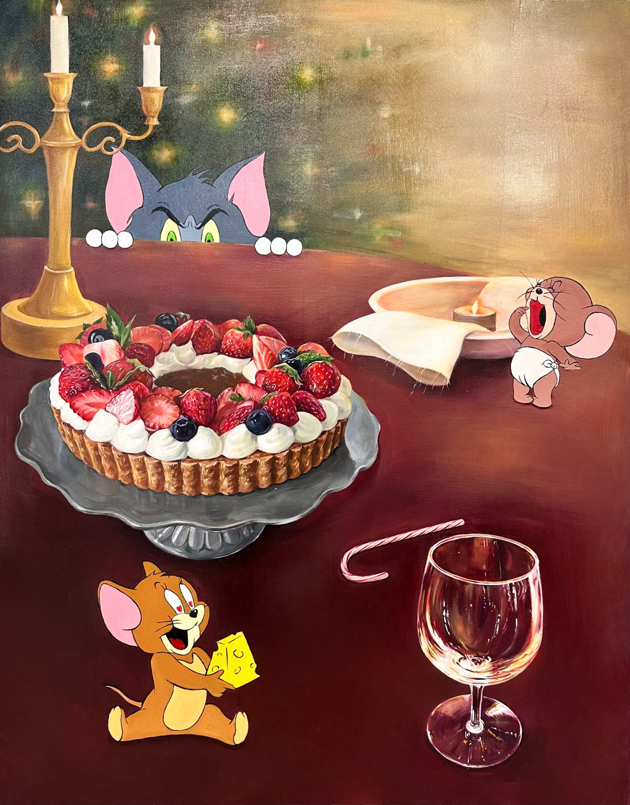

LIVING PICTURE / WEB AR · FIX 5
그림이 살아나는 순간
카메라로 이 그림을 비춰 보세요.
그림 위에서 캐릭터들이 움직이기 시작합니다.

카메라로 시작하기
그림을 다른 화면에 띄우거나 인쇄해 준비해 주세요.
인식 이미지 열기 ↗
영상 미리보기
첫 실행 시 이미지 분석에 시간이 걸릴 수 있습니다. 밝은 곳에서 그림 전체가 보이도록 비춰 주세요. 카메라 영상은 서버에 전송하지 않습니다.
그림을 화면 안에 맞춰 주세요
소리 켜기
처음부터
영상 재생
종료
닫기